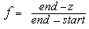
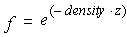
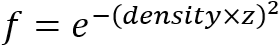
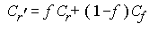
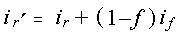

title: glFogf function (Gl.h) description: The glFogf and function specifies fog parameters. ms.assetid: 69961d8f-385c-4353-aef3-38fb654c44f8 keywords:
The glFogf and function specifies fog parameters.
void WINAPI glFogf(
GLenum pname,
GLfloat param
);
pname
Specifies a single-valued fog parameter.
Accepts one of the following values.
| Value | Meaning |
|---|---|
| GL_FOG_MODE | The params parameter is a single floating-point value that specifies the equation to be used to compute the fog blend factor, f. Three symbolic constants are accepted: GL_LINEAR, GL_EXP, and GL_EXP2. The equations corresponding to these symbolic constants are defined in the following Remarks section. The default fog mode is GL_EXP. |
| GL_FOG_DENSITY | The params parameter is a single floating-point value that specifies density, the fog density used in both exponential fog equations. Only nonnegative densities are accepted. The default fog density is 1.0. |
| GL_FOG_START | The params parameter is a single floating-point value that specifies start, the near distance used in the linear fog equation. The default near distance is 0.0. |
| GL_FOG_END | The params parameter is a single floating-point value that specifies end, the far distance used in the linear fog equation. The default far distance is 1.0. |
| GL_FOG_INDEX | The params parameter is a single floating-point value that specifies if , the fog color index. The default fog index is 0.0. |
param
Specifies the value that pname will be set to.
This function does not return a value.
The following error codes can be retrieved by the glGetError function.
| Name | Meaning |
|---|---|
| GL_INVALID_ENUM | pname was not an accepted value. |
| GL_INVALID_OPERATION | The function was called between a call to glBegin and the corresponding call to glEnd. |
You enable and disable fog with glEnable and glDisable, using the argument GL_FOG. While enabled, fog affects rasterized geometry, bitmaps, and pixel blocks, but not buffer-clear operations.
The glFogf function assigns the value or values in params to the fog parameter specified by pname.
Fog blends a fog color with each rasterized pixel fragment's posttexturing color using a blending factor f. Factor f is computed in one of three ways, depending on the fog mode. Let z be the distance in eye coordinates from the origin to the fragment being fogged. The equation for GL_LINEAR fog is:

The equation for GL_EXP fog is:

The equation for GL_EXP2 fog is:

Regardless of the fog mode, f is clamped to the range [0,1] after it is computed. Then, if OpenGL is in RGBA color mode, the fragment's color Cr is replaced by

In color-index mode, the fragment's color index ir is replaced by

The following functions retrieve information related to the glFog functions:
glGet with argument GL_FOG_COLOR
glGet with argument GL_FOG_INDEX
glGet with argument GL_FOG_DENSITY
glGet with argument GL_FOG_START
glGet with argument GL_FOG_END
glGet with argument GL_FOG_MODE
glIsEnabled with argument GL_FOG
| Requirement | Value |
|---|---|
| Minimum supported client | Windows 2000 Professional [desktop apps only] |
| Minimum supported server | Windows 2000 Server [desktop apps only] |
| Header | Gl.h |
| Library | Opengl32.lib |
| DLL | Opengl32.dll |